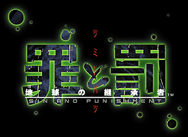
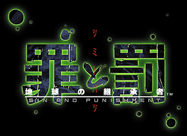
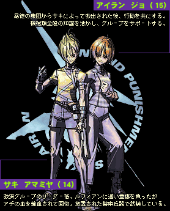
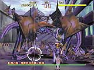
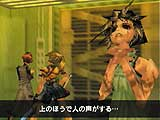
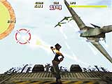

|  |
|
||||||
(993KB)
|  |
|
||||||
| このゲームはありきたりの“アクションシュ−ティング”とは全く異なる。グラフィックの迫力はもちろんのこと、スト−リ−も充実、撃つ・斬るなどの操作感は今までにない斬新さと満足感がある。撃って撃って撃ちまくれ！ 斬って斬って突き進め！！君は知らず知らずのうちに、主人公になりきることだろう。 |
| 新世紀を迎えて間もない時代、平和的秩序が強制される世界において、更新を続ける人口の増加率。人類は異常環境下においても繁殖を可能とする「新種」生命体の創造に着手する。 しかし巨大牧場として改造された日本国北海道において、突如「新種」より人類狩猟を本能とする攻撃群が発生した。以後「ルフィアン」と呼称される攻撃群は日本列島を南下し、日本東北部を制圧するに至る。 「ルフィアン」の侵攻が目前に迫った首都では、避難勧告による混乱から大規模な暴動が頻発する。事態は国際治安組織「武装ボランティア」の派遣に及び、武力による暴徒鎮圧へと発展していく。 首都からは人間の生きる場、そして存在が失われていく。そんな中、特異な救済活動を行う住民グループが発生する。グループを率いる「彼女」は人々に説く。「ルフィアン」は人の敵、「武装ボランティア」は偽善の衆と。「彼女」の言葉を信じ、人々は武器を手に取った。しかし「彼女」の元に集う者の多くは非力であり、盤石の態勢を整えるべく首都からの一時脱却を迫られていた。 |
|  |  |  |
| 群れをなして行動する「ルフィアン」狙いを定めて撃ちまくれ！ | 画面右手前が「救済グループ」の指導者アチ。彼女に秘められた力とは？ | 大迫力の空中戦。凄まじい攻撃に君は応戦できるか！？ |